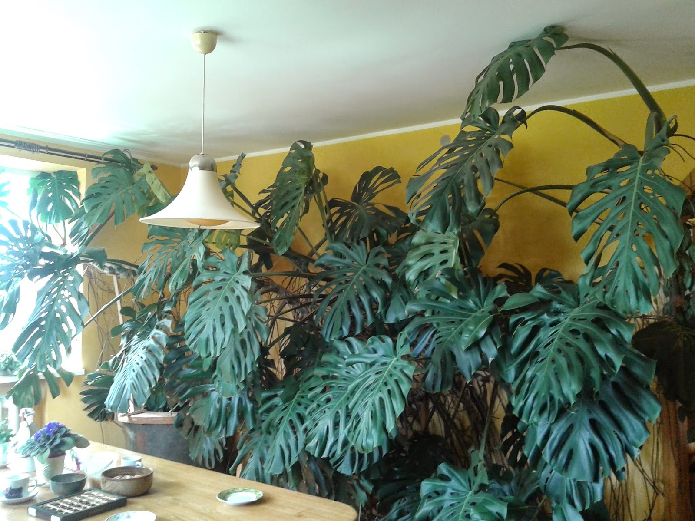
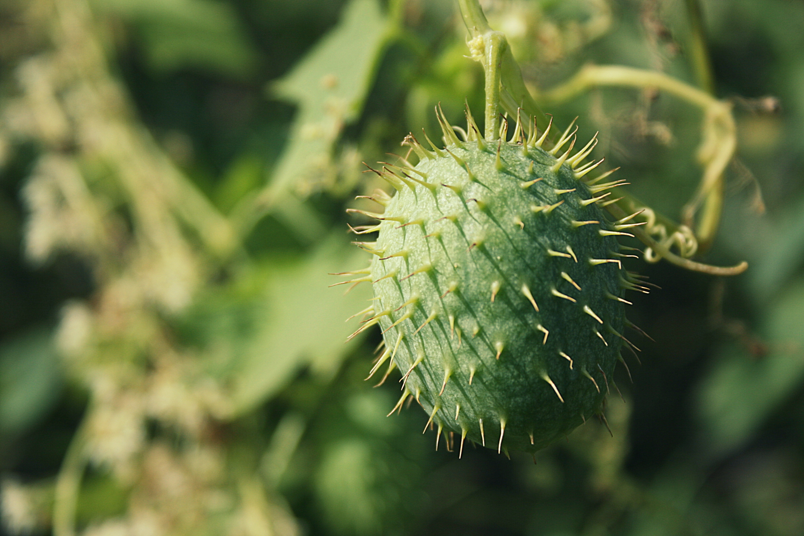
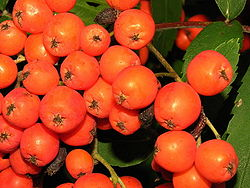

vaisiai - išsamiai DELFI.lt
2020.10.29 08:40
Spalio 29 d., ketvirtadienis | Vilnius 11 Kaunas 10 Klaipėda 10 Šiauliai 9 Panevėžys 10 Alytus 10 Nida 9 Raseiniai 9 Utena 11 Mažeikiai 8 Biržai 10 Kėdainiai 10 Kiti miestai Paieška | Pranešti naujieną | LT RU EN | Reklama Kontaktai | Statistika | + Apie Delfi plius Prisijungti Naujausios Skaitomiausios Lietuvoje Sportas Orai Kriminalai Užsienyje Veidai Horoskopai Gyvenimas Mokslas Verslas Daugiau Sveikata Kultūra Auto M360 Politiko akimis Jaunimas Pilietis Nuomonių ringas Multimedija Teisė Medijos Karas Propaganda PT Melo detektorius Demaskuok Ačiū už pamokas Temos | Delfi Video
Naujienos
Naujausios Skaitomiausios Lietuvoje Sportas Kriminalai Užsienyje Veidai GyvenimasVerslas Mokslas Kultūra Sveikata Auto Pilietis Miestai M360 Politiko akimis
Delfi Video
Tiesioginės transliacijos Delfi Diena Delfi Dėmesio centre LaidosNaudinga
Orai Horoskopai Receptai TV Programa Valiutų kursaiDelfi projektai
Multimedija Idėja Lietuvai Kablys Smalsūs EP Atsakingas požiūris Atgal į gyvenimąDelfi kanalai
Agro Būstas Moterys Šeima Kelionės Grynas Stilius Maistas Letena Karjera Bored Panda Sek DelfiMobilusis Delfi
Naujausios žinios Naujienų temos Delfi Temos vaisiai
vaisiai
Vaisius – magnolijūnų organas, kuriame; sėkmingai apvaisinus, vystosi sėklos. Vaisius sudarytas iš apyvaisio ir sėklų. Jis formuojasi iš peržydėjusio žiedo dalies – stipriai padidėjusios mezginės, gaubiančios sėklas. Brandindami sėklas augalai išnaudoja daug energijos.
Asta Meschino gaminti itališkus patiekalus išmoko dėl vyro: itališka virtuvė – tai daugiau nei pica ir makaronai (38)
Itališka virtuvė daugeliui asocijuojasi su makaronais ir picomis, bet tai toli gražu – ne viskas. Kaip pasakojo verslininkė Asta Meschino , italai...
Rauginti kopūstai namie: 2 nesudėtingi receptai (6)
Ar žinote daug produktų, kuriuos dėl naudingų medžiagų gausos noriai valgytų tiek mėsos gerbėjai, tiek vegetarai, tiek žaliavalgiai? Ko gero,...
Būtini rudens darbai sode: kaip genėti, balinti vaismedžius, kuo purkšti ir ką daryti su lapais
Obuoliai ir kriaušės nuskintos, bet poilsio sezono sodininkams dar teks palaukti. Rudens darbai sode gal net svarbesni, nei pavasarį – norint ir...
Sausumos jachta į Korsiką išvykę lietuviai: už Lietuvos sienų visi keliauja ir gyvena normalų gyvenimą 119
Kai Lietuvą buvo sukaustęs virusinis baimės sindromas ir baimė keliauti, susiruošėme patikrinti, kaip gyvena kitos Europos tautos. Galutiniu kelionės...
Ruošiamės žiemai – kaip kuo ilgiau išlaikyti įvairias daržoves ir kitas rudens gėrybes šviežias?
Artėjant žiemai, pats tinkamiausias laikas pasirūpinti per rudenį sukauptų gėrybių ilgaamžiškumu. Ne visas daržoves, vaisius ir uogas galima...
Virtuvės šefas šrilankietis Dilan jau 10 metų gyvena Lietuvoje: papasakojo, kokie patiekalai jums padės pasijusti it egzotiškose šalyse (20)
Gydytojas pasakė, kaip geriausiai išsaugoti vaisius ir daržoves žiemai: daugumos mėgiamo būdo reikėtų vengti (36)
2 nesudėtingi salotų receptai padės į racioną įtraukti tikrą vitaminų bombą (7)
Maisto technologė įspėja: skaitykite gaminio sudėtį, nes etikečių užrašai klaidina (8)
Sodininkams – 1,5 mln. eurų paramos
Klementinas ar mandarinas? Ekspertė įvardijo pagrindinius jų skirtumus (17)
Rudeniniai sodo darbai – ką būtina atlikti, kol neatėjo šalčiai? (2)
Augant COVID-19 atvejų skaičiui, e. parduotuvės vėl klesti: kai kur užsakymai lenkia karantino lygį, samdo daugiau darbuotojų (35)
Lūpų pūslelinė gali būti rimtas organizmo įspėjimas: gydytojas pasakė, kas jį skatina labiausiai (52) 213
Frydricho Nyčės „Tragedijos gimimas“ ir Antikos mitai šiame veikale
Smulkiųjų ūkininkų bendradarbiavimas: kokiai veiklai galima gauti paramą iki 90 tūkst. eurų (3)
Lietuvė papasakojo, kaip atrodo tikrasis XXI amžiaus moters gyvenimas Irako Kurdistane (28) 122
Mitybos specialistas sumalė į miltus populiarų pusryčių patiekalą: tiesus kelias į nutukimą (225) 119
Atnaujino „Kārums“ prekės ženklą ir pakuočių dizainą (1)
Stasys Kropas. Atsakymas neigiamas: kovoje su pinigų plovimu išlygoms vietos neturi likti (1)
Kūdikio primaitinimas: nuo ko pradėti, kokiais kiekiais ir ką daryti, jei vaikas atsisako valgyti? (14)
Japonų mitybos įpročiai karo metu: ryžiai ir žmogiena (3)
Auksiniai Gordono Ramsay patarimai norintiems gaminti skaniau ir greičiau (11)
Kur laikyti obuolius? Tikrai ne dubenyje ant spintelės (12)
Auksu išpuoštame Ištvano Kvik restorane – paauksuoti cepelinai ir mažai kam girdėtos romų tradicijos (25)
Meile reikia mėgautis. Tik tada ji neišeis
„Lidl“ pradeda teikti „Maisto bankui“ vaisius ir daržoves
Augant paklausai, lietuviškų obuolių šiemet bus daugiau
Pasakoja, kokių lietuviškų daržovių ir vaisių šiuo metu galima rasti prekybos centruose (8)
„Propagandos dekonstrukcijos“: apie COVID-19 kurpiamos sąmokslo teorijos gali kainuoti gyvybę (13)
1 2 3 4 5 6 7 8 9 10 | Populiariausi straipsniai ir video Sekite DELFI REKLAMA KONTAKTAI PRIVATUMAS KARJERA en.delfi.lt ru.delfi.lt pl.delfi.lt delfi.ee rus.delfi.ee delfi.lv ru.delfi.lv UAB DELFI Gynėjų g. 16, 01109 Vilnius +37052045400 info@delfi.lt © 1999-2020 DELFI. Visos teisės saugomos .- SEGEBUTĖS UŽRAŠAI: Pitaja arba "Drakono vaisius"
- Sodo gėrybės - Sujunk 3 vaisius
- vaisius - Vikižodynas - Wiktionary
- Daržovės ir vaisiai - BARBORA
- Džiovinti vaisiai | Džiovintos uogos | Riešutai Jums
- Drakono vaisius arba Kertuotis – Tailando vaisius ...
- Egzotiniai vaisiai ir daržovės | MAXIMA | MAXIMA
- Durianas – Tailando vaisių karalius, smirdantis vaisius ...
- VAISIAUS ŽŪTIS
- vaisiai - išsamiai DELFI.lt
- SEGEBUTĖS UŽRAŠAI: Pitaja arba "Drakono vaisius"
„Misija – švari vasara“ skaičiuoja darbo vaisius . www.alkas.lt 2020 09 24 11:04 „Misija – švari vasara“ skaičiuoja rezultatus | lrv.lt nuotr. Vasaros pradžioje Valstybinė saugomų teritorijų tarnyba prisijungė prie pakuočių tvarkymo sumanymo „Misija – švari vasara“. Kadangi buvo pastebėta, jog paskelbus karantiną ...
- Sodo gėrybės - Sujunk 3 vaisius
Paspaudus vaisius turi būti labai minkštas, o žievė itin lengvai luptis. Jei sukate galvą, ką pagaminti iš avokado. Štai jums kelios idėjos. Vištienos salotos su mangais ir avokadais. Itin ...
- vaisius - Vikižodynas - Wiktionary
Geriausia apsaugoti džiovintus vaisius nuo tiesioginių saulės spindulių ir laikyti juos tamsioje vietoje. Jei šaldytuve nėra pakankamai vietos džiovintiems vaisiams laikyti, galite juos įdėti į viršutinę virtuvės stalčių lentyną, kur dažnai nežiūrite. Atkreipkite dėmesį, kad kambaryje neturėtų būti didelė drėgmė.
- Daržovės ir vaisiai - BARBORA
Durianas – Tailando vaisius, tajų kalba vadinamas Tu-Rian.Tai didžiulis vaisius, pasižymintis specifiniu kvapu, todėl tikrai pastebėsite ir užuosite durianus pardavinėjamus ne tik Bankoko gatvėse ar turguose, bet ir praktiškai visur Tailande.
- Džiovinti vaisiai | Džiovintos uogos | Riešutai Jums
Saldžiarūgščius vaisius saugojo piktos ir nuodingos širšės. Žiemos pradžia Lapkritis - rugsėjo anūkas, o spalio - sūnus. Jis dar ne žiema. Tai paskutinis rudens mėnuo. Piktų šalnų ir žvarbumo pradžia. Nematoma šalčio giltinė nuvirina pievas, laukus, paežeres. Nupurto spalio auksą beržynuose, užgesina raudonų klevų ...
- Drakono vaisius arba Kertuotis – Tailando vaisius ...
Deja, visas bergamotės gėris yra odelėje, pats vaisius yra rūgštus ir maistui nenaudojamas. Nedideli bergamočių medeliai dyglių auga Italijoje, Bergamo regione, žydi balandį smulkiais baltais ir salsvai kvepiančiais žiedais. Vaisiai panašūs į citrinas ir sveria apie 200 g. Jos prinoksta ir skinamos žiemą bei ankstyvą pavasarį ...
- Egzotiniai vaisiai ir daržovės | MAXIMA | MAXIMA
Kertuotis, geriau žinomas kaip drakono vaisius, tajų kalba vadinamas Gao Mung Gorn, yra vienas iš Tailando vaisių, kurių tiesiog būtina paragauti keliaujant į Tailandą. Drakono vaisius yra iš tikrųjų išskirtinai atrodantis vaisius ir savo pavadinimą yra gavęs būtent dėl išskirtinės išvaizdos.
- Durianas – Tailando vaisių karalius, smirdantis vaisius ...
Blenderyje sumaltas drakono vaisius tapo gličia tyre, kuri nepasižymėjo skoniu, bet suputojo ir priminė šampūną su juodais krisleliais. Teko tą tyrę stipriai skiesti ananasų ir apelsinų sultimis, kol skonis tapo patrauklus ir nesijautė glitumo, tačiau ir pitajos skonio visai nesijautė. Nepatariu pitajos naudoti gėrimams.
- VAISIAUS ŽŪTIS
Maisto ir kitų kasdienių prekių parduotuvė internete. Informuojame, kad šioje svetainėje yra naudojami slapukai (angl. cookies).
- vaisiai - išsamiai DELFI.lt
Džiovinti vaisiai ir uogos ne tik sveikas ir maistingas užkandis praalkus, bet ir puikus įvairių maisto patiekalų pagardas, kurį įsigysite už puikią kainą! Įsigykite jau pamėgtų džiovintų vaisių ir uogų bei atraskite naujus skonius.
„Misija – švari vasara“ skaičiuoja darbo vaisius . www.alkas.lt 2020 09 24 11:04 „Misija – švari vasara“ skaičiuoja rezultatus | lrv.lt nuotr. Vasaros pradžioje Valstybinė saugomų teritorijų tarnyba prisijungė prie pakuočių tvarkymo sumanymo „Misija – švari vasara“. Kadangi buvo pastebėta, jog paskelbus karantiną ...
Paspaudus vaisius turi būti labai minkštas, o žievė itin lengvai luptis. Jei sukate galvą, ką pagaminti iš avokado. Štai jums kelios idėjos. Vištienos salotos su mangais ir avokadais. Itin ...
Geriausia apsaugoti džiovintus vaisius nuo tiesioginių saulės spindulių ir laikyti juos tamsioje vietoje. Jei šaldytuve nėra pakankamai vietos džiovintiems vaisiams laikyti, galite juos įdėti į viršutinę virtuvės stalčių lentyną, kur dažnai nežiūrite. Atkreipkite dėmesį, kad kambaryje neturėtų būti didelė drėgmė.
Durianas – Tailando vaisius, tajų kalba vadinamas Tu-Rian.Tai didžiulis vaisius, pasižymintis specifiniu kvapu, todėl tikrai pastebėsite ir užuosite durianus pardavinėjamus ne tik Bankoko gatvėse ar turguose, bet ir praktiškai visur Tailande.
Saldžiarūgščius vaisius saugojo piktos ir nuodingos širšės. Žiemos pradžia Lapkritis - rugsėjo anūkas, o spalio - sūnus. Jis dar ne žiema. Tai paskutinis rudens mėnuo. Piktų šalnų ir žvarbumo pradžia. Nematoma šalčio giltinė nuvirina pievas, laukus, paežeres. Nupurto spalio auksą beržynuose, užgesina raudonų klevų ...
Deja, visas bergamotės gėris yra odelėje, pats vaisius yra rūgštus ir maistui nenaudojamas. Nedideli bergamočių medeliai dyglių auga Italijoje, Bergamo regione, žydi balandį smulkiais baltais ir salsvai kvepiančiais žiedais. Vaisiai panašūs į citrinas ir sveria apie 200 g. Jos prinoksta ir skinamos žiemą bei ankstyvą pavasarį ...
Kertuotis, geriau žinomas kaip drakono vaisius, tajų kalba vadinamas Gao Mung Gorn, yra vienas iš Tailando vaisių, kurių tiesiog būtina paragauti keliaujant į Tailandą. Drakono vaisius yra iš tikrųjų išskirtinai atrodantis vaisius ir savo pavadinimą yra gavęs būtent dėl išskirtinės išvaizdos.
Blenderyje sumaltas drakono vaisius tapo gličia tyre, kuri nepasižymėjo skoniu, bet suputojo ir priminė šampūną su juodais krisleliais. Teko tą tyrę stipriai skiesti ananasų ir apelsinų sultimis, kol skonis tapo patrauklus ir nesijautė glitumo, tačiau ir pitajos skonio visai nesijautė. Nepatariu pitajos naudoti gėrimams.
Maisto ir kitų kasdienių prekių parduotuvė internete. Informuojame, kad šioje svetainėje yra naudojami slapukai (angl. cookies).
Džiovinti vaisiai ir uogos ne tik sveikas ir maistingas užkandis praalkus, bet ir puikus įvairių maisto patiekalų pagardas, kurį įsigysite už puikią kainą! Įsigykite jau pamėgtų džiovintų vaisių ir uogų bei atraskite naujus skonius.
  